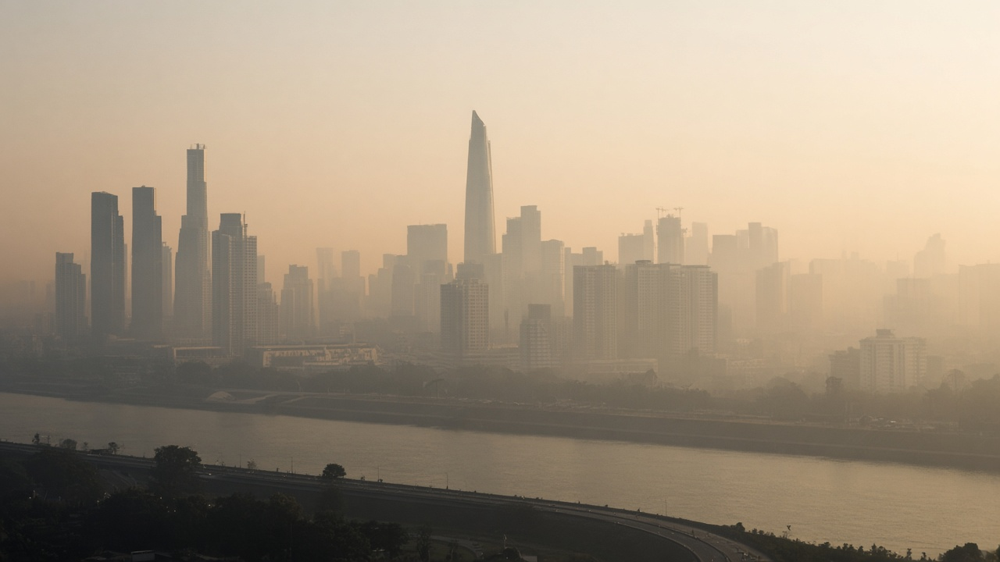

Air Quality Index (AQI) and Public Alerts
Published on August 20, 2026

The Air Quality Index converts complex air pollution measurements into a simple, color-coded scale that helps the public understand daily health risks. AQI values typically range from zero to five hundred, with higher numbers indicating greater concentrations of regulated pollutants such as ground-level ozone, PM2.5, PM10, sulfur dioxide, nitrogen dioxide, and carbon monoxide. National agencies calculate the index from hourly or daily monitoring data collected at fixed stations, mobile units, and increasingly from low-cost sensor networks. Each AQI category corresponds to health advisories recommending whether sensitive groups and the general population should limit outdoor exertion.
Public alert systems disseminate AQI forecasts and real-time readings through websites, mobile applications, electronic billboards, radio broadcasts, and social media channels. During severe pollution episodes, authorities may issue health advisories, school activity restrictions, vehicle rationing, or temporary industrial curbs to reduce exposure. Vulnerable populations including children, elderly individuals, pregnant women, and people with asthma or cardiovascular disease benefit most from timely warnings. Effective communication uses plain language, culturally appropriate messaging, and multilingual outreach to reach diverse urban and rural communities across all income levels.
Advances in data fusion combine satellite observations, chemical transport models, and ground measurements to improve spatial coverage where monitoring stations are sparse. Machine learning algorithms now predict pollution spikes tied to weather inversions, wildfire smoke transport, and festival-related emissions. Transparency in methodology builds public trust and enables researchers to evaluate policy effectiveness over time. Schools and employers increasingly adjust outdoor schedules when authorities declare high AQI days, limiting exposure for students and field workers. By linking AQI alerts to long-term emission reduction strategies, cities can protect residents during acute events while advancing sustained improvements in ambient air quality and public health outcomes.
वायु गुणस्तर सूचकांकले जटिल वायु प्रदूषण मापनलाई सरल, रङकोड गरिएको स्केलमा रूपान्तरण गर्छ जसले जनतालाई दैनिक स्वास्थ्य जोखिम बुझ्न मद्दत गर्छ। AQI मान सामान्यतया शून्यदेखि पाँच सयसम्म हुन्छ, उच्च संख्याले भूपृष्ठ-स्तरको ओजोन, PM2.5, PM10, सल्फर डाइअक्साइड, नाइट्रोजन डाइअक्साइड र कार्बन मोनोअक्साइड जस्ता नियमित प्रदूषकको बढी सान्द्रता जनाउँछ। राष्ट्रिय निकायले स्थिर स्टेशन, मोबाइल एकाइ र सस्तो सेन्सर सञ्जालबाट प्रति घण्टा वा दैनिक अनुगमन डाटाबाट सूचकांक गणना गर्छ। प्रत्येक AQI कोटीले संवेदनशील समूह र सामान्य जनताले बाहिरी शारीरिक गतिविधि सीमित गर्नुपर्छ कि भन्ने स्वास्थ्य सल्लाहसँग मेल खान्छ।
सार्वजनिक सतर्कता प्रणालीले वेबसाइट, मोबाइल एप, विद्युतीय बिलबोर्ड, रेडियो प्रसारण र सामाजिक सञ्जालमार्फत AQI पूर्वानुमान र वास्तविक-समय रिडिङ प्रसारण गर्छ। गम्भीर प्रदूषणका बेला अधिकारीहरूले स्वास्थ्य सल्लाह, विद्यालय गतिविधि प्रतिबन्ध, सवारी कोटा वा अस्थायी औद्योगिक सीमा जारी गर्न सक्छन्। बालबालिका, वृद्ध, गर्भवती महिला र दम वा हृदय रोग भएका व्यक्तिलाई समयमै चेतावनीबाट विशेष लाभ हुन्छ। प्रभावकारी सञ्चारले सरल भाषा, सांस्कृतिक रूपमा उपयुक्त सन्देश र बहुभाषिक पहुँच प्रयोग गर्छ।
डाटा संयोजनले उपग्रह अवलोकन, रासायनिक यातायात मोडेल र भुइँ मापन मिलाएर अनुगमन स्टेशन विरल भएका क्षेत्रमा स्थानिक कवरेज सुधार्छ। मेसिन सिकाइ एल्गोरिदमले मौसम उल्टो, जंगली आगोको धुँवा र चाडपर्व उत्सर्जनसँग जोडिएको प्रदूषण वृद्धि पूर्वानुमान गर्छ। विधिमा पारदर्शिताले जनविश्वास बढाउँछ र अनुसन्धानकर्तालाई समयसँगै नीतिको प्रभावकारिता मूल्याङ्कन गर्न सक्षम बनाउँछ। अधिकारीहरूले उच्च AQI दिन घोषणा गर्दा विद्यालय र रोजगारदाताहरूले बाहिरी कार्यतालिका समायोजन गर्ने प्रवृत्ति बढ्दै छ, जसले विद्यार्थी र क्षेत्र कार्यकर्ताको संपर्क सीमित गर्छ। AQI सतर्कतालाई लामो-अवधि उत्सर्जन न्यूनीकरण रणनीतिसँग जोड्दा शहरले तीव्र घटनामा बासिन्दा संरक्षण गर्छ भने निरन्तर वातावरणीय वायु गुणस्तर र सार्वजनिक स्वास्थ्य परिणाम सुधार अगाडि बढाउँछ।
वायु गुणवत्ता सूचकांक जटिल वायु प्रदूषण मापन को सरल, रंग-कोडित पैमाने में रूपांतरण करता है जो जनता को दैनिक स्वास्थ्य जोखिम समझने में मदद करता है। AQI मान सामान्यतः शून्य से पाँच सौ तक होते हैं, उच्च संख्या जमीनी स्तर के ओजोन, PM2.5, PM10, सल्फर डाइऑक्साइड, नाइट्रोजन डाइऑक्साइड और कार्बन मोनोऑक्साइड जैसे विनियमित प्रदूषकों की अधिक सांद्रता दर्शाती है। राष्ट्रीय एजेंसियाँ स्थिर स्टेशन, मोबाइल इकाइयों और सस्ते सेंसर नेटवर्क से प्रति घंटा या दैनिक निगरानी डेटा से सूचकांक की गणना करती हैं। प्रत्येक AQI श्रेणी स्वास्थ्य सलाह से मेल खाती है, जो बताती है कि संवेदनशील समूह और आम जनता को बाहरी शारीरिक गतिविधि सीमित करनी चाहिए या नहीं।
सार्वजनिक अलर्ट प्रणाली वेबसाइट, मोबाइल ऐप, विद्युत बिलबोर्ड, रेडियो प्रसारण और सामाजिक मीडिया के माध्यम से AQI पूर्वानुमान और वास्तविक-समय रीडिंग प्रसारित करती है। गंभीर प्रदूषण के दौरान अधिकारी स्वास्थ्य सलाह, स्कूल गतिविधि प्रतिबंध, वाहन कोटा या अस्थायी औद्योगिक सीमा जारी कर सकते हैं। बच्चे, बुजुर्ग, गर्भवती महिलाएँ और दमा या हृदय रोग वाले लोगों को समय पर चेतावनी से विशेष लाभ होता है। प्रभावी संचार सरल भाषा, सांस्कृतिक रूप से उपयुक्त संदेश और बहुभाषी पहुँच का उपयोग करता है ताकि विविध शहरी और ग्रामीण समुदायों तक सभी आय स्तरों में पहुँचे।
डेटा संयोजन उपग्रह अवलोकन, रासायनिक परिवहन मॉडल और भूमि मापन को मिलाकर उन क्षेत्रों में स्थानिक कवरेज सुधारता है जहाँ निगरानी स्टेशन विरल हैं। मशीन सीखने के एल्गोरिदम अब मौसम उलट, जंगली आग के धुएँ के परिवहन और त्योहार-संबंधित उत्सर्जन से जुड़े प्रदूषण उछाल का पूर्वानुमान करते हैं। विधि में पारदर्शिता जन विश्वास बढ़ाती है और शोधकर्ताओं को समय के साथ नीति प्रभावकारिता का मूल्यांकन करने में सक्षम बनाती है। अधिकारियों द्वारा उच्च AQI दिन घोषित करने पर स्कूल और नियोक्ता बाहरी कार्यक्रम समायोजित करने लगे हैं, जिससे छात्रों और क्षेत्र कार्यकर्ताओं का संपर्क सीमित होता है। AQI अलर्ट को दीर्घकालिक उत्सर्जन न्यूनीकरण रणनीतियों से जोड़कर शहर तीव्र घटनाओं में निवासियों की रक्षा करते हुए वातावरणीय वायु गुणवत्ता और सार्वजनिक स्वास्थ्य परिणामों में निरंतर सुधार कर सकते हैं।